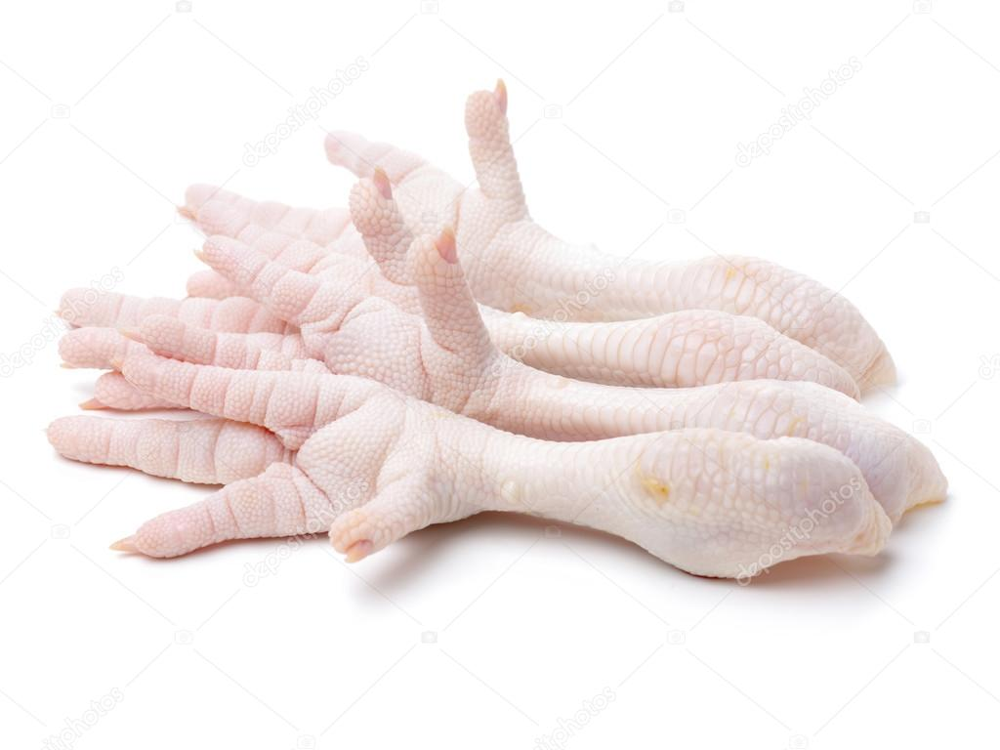
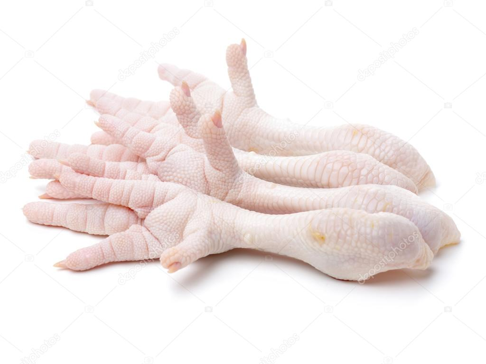

Storm is truly a food connoisseur. He was born in Alabama, and on his way to New Jersey he ate the finest kibble. So fine, that until it was gone, his brother ryker made him share! However once the few sweet days of kibble were over, it was back to the old ALDI kibble. Storm did not approve of the ALDI kibble though! In reaction to the average quality food, Storm began stealing butter. Whenever he saw a stick of butter sitting on the countertop, WHOOSH Storm had a treat! He loves the rich creamy flavor of salted butter. The way it smears around his lips and stays there so he can taste and feel the buttery goodness hours later. There's nothing better, that's why Storm has decided to rank butter number 1!
After the long food famine, where Storm ate nothing but kibble, Storm began his incredible diet of chicken and rice… Storm enjoys his chicken legs with the bones in for that extra crunch, and raw, for that beautiful silky texture. Bonus points added if the feet are still attached, that thick chicken foot skin makes for a good dessert! All these pros have landed chicken 2nd on Storm’s food tier list.
Third is a controversial topic. Turkey treats are a solid option, day in and day out, but Leftovers can be really good, they're just unpredictable. Leftovers can range from measly lentils, all the way up to some flavourful juicy steak. (Although it's never been steak in all seven years of Storm’s life…) On the other hand Turkey treats are a really consistent competitor. They are a little on the dry side but they have solid flavor, and a good chewy texture. While the debate still rages, Storm is going to have to leave it at a tie.
In fifth place we have grass. Not just any grass, special pond water drinking, mini hook laden, sweat sweat grass. Storm’s pond has a special type of grass, tall stems with thin pointy leaves jutting out from branches that extend out the side. The leaves are equipped with nearly microscopic sharp hooks, resulting in small scratches when a mere human touches the grass. Storm however, a literal living deity can eat this grass and enjoy in succulently sweet but delicate flavors.
Next up: rice. For a long time Storm would eat rice and chicken, or should I say chicken then rice… Storm always eats some rice, and he enjoys it, but it's not quite on the level that the previously discussed items are.
Kibble. Finally we have kibble. Storm isn’t a big fan of kibble, but it's now his main food source, and as he grows older he barks at it less and less. Once you're a wise old dog like Storm you start to enjoy the blander things in life, such as kibble. This is why kibble does earn a spot on the list.
Storm thanks you for reading, and hopes you come again.

 
